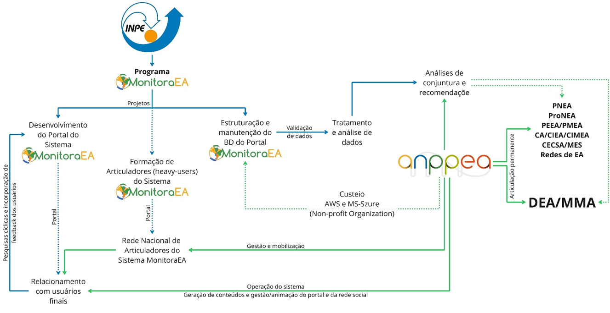

Governança
📌 GOVERNANÇA, GESTÃO E SUSTENTABILIDADE
👉 Modelo de Governança
A governança do Sistema MonitoraEA está organizada em uma arquitetura colaborativa e multinível, que articula instituições com competências complementares e alinhadas à Política Nacional de Educação Ambiental (PNEA). A estrutura integra dimensões técnico-científicas, sociais e interinstitucionais, garantindo robustez tecnológica, legitimidade social e aderência às políticas públicas de Educação Ambiental.
O arranjo de desenvolvimento tecnológico é liderado pelo Programa MonitoraEA (Processo SEI/INPE n.º 01340.009497/2022-57), programa do portfólio institucional do Instituto Nacional de Pesquisas Espaciais (INPE), realizado por meio do Laboratório de Análise e Desenvolvimento de Indicadores de Sustentabilidade (LADIS), alocado na Coordenação de Ciência do Sistema Terrestre (CCST), sob responsabilidade do Dr. Evandro Albiach Branco. O Programa atua como núcleo técnico-científico responsável pelo desenvolvimento, manutenção e evolução da infraestrutura tecnológica do sistema, a partir da qual são estruturados e geridos os projetos que implementam novas funcionalidades, melhorias e complementos do portal. Ainda, faz parte das atividades estruturais do programa, os processos de construção participativa de indicadores que suportam as diversas perspectivas do sistema.
Nessa configuração, o INPE, por meio do Programa MonitoraEA, coordena quatro frentes centrais:
- Desenvolvimento do Portal MonitoraEA, abrangendo concepção, codificação, testes e aprimoramento contínuo da plataforma digital;
- Os processos de formação de articuladores locais (heavy users), por meio da capacitação e suporte à Rede Nacional de Articuladores do Sistema;
- Estruturação e manutenção da infraestrutura de dados, assegurando armazenamento, segurança, atualização e interoperabilidade, com custeio viabilizado por parcerias com provedores de nuvem (AWS e Microsoft Azure), firmadas via ANPPEA;
- A coordenação de processos metodológicos estruturados para a construção participativa de indicadores de M&A para as diversas perspectivas do Sistema MonitoraEA.
A Articulação Nacional de Políticas Públicas em Educação Ambiental (ANPPEA) é corresponsável pela operação, gestão social do sistema e advocacy em políticas públicas de EA, atuando diretamente na mobilização da rede de usuários, na curadoria de conteúdos e na gestão das comunidades finalísticas. Também assegura a legitimidade social do MonitoraEA por meio de processos contínuos de validação, engajamento, coleta de feedbacks e interação direta com os usuários e articulação com instituições do campo da EA em todo o Brasil.
Em nível estratégico, o Departamento de Educação Ambiental do Ministério do Meio Ambiente (DEA/MMA) exerce função de apoio à articulação interinstitucional, contribuindo para o alinhamento do Sistema MonitoraEA aos instrumentos, colegiados e redes vinculadas à PNEA. O DEA/MMA atua como instância pública de referência, facilitando processos de relacionamento institucional, promovendo a integração do sistema com políticas federais, e interfederativas ou subnacionais, e redes governamentais e estimulando sua adoção por órgãos e entidades públicas. Além disso, utiliza os dados produzidos pelo sistema para subsidiar ações e decisões orientadas por evidências no âmbito da implementação da PNEA.
A seguir, apresenta-se o quadro 13, que consolida as competências e responsabilidades de cada instituição envolvida, formalizando o arranjo de governança do Sistema MonitoraEA.
Quadro 13 – Componentes da Governança do Sistema MonitoraEA.
| Componente da estrutura de Governança | Descrição Geral | Competências e Responsabilidades |
|---|---|---|
| Coordenação Técnica e Científica: INPE/LADIS | Desenvolvimento tecnológico da plataforma (concepção, codificação, testes, aprimoramentos) | Interfaces públicas e autenticadas |
| Gestão de repositórios e documentação técnica | ||
| Manutenção da infraestrutura (servidores, bancos de dados, nuvem) | ||
| Segurança da informação e proteção de dados | ||
| Pesquisa e inovação em métodos, algoritmos e funcionalidades | ||
| Estruturação e manutenção do banco de dados e de sua interoperabilidade | ||
| Gestão Social, Mobilização e Advocacy: ANPPEA | Instância corresponsável pela operação social, mobilização de usuários e gestão comunitária. | Articulação da Rede Nacional de Articuladores Locais |
| Curadoria e gestão de conteúdos do portal e da rede social | ||
| Gestão das comunidades finalísticas e mediação | ||
| Relacionamento contínuo com usuários (engajamento, suporte, feedbacks) | ||
| Validação social das informações produzidas | ||
| Suporte institucional para parcerias e custeio da infraestrutura em nuvem | ||
| Apoio à Articulação Interinstitucional: DEA/MMA | Órgão federal responsável por apoiar processos de relacionamento interinstitucional e alinhamento do sistema à PNEA. | Facilitação da articulação com políticas, instrumentos e colegiados da PNEA (ProNEA, PEEA, CIEA, CECSA, etc.) |
| Apoio à definição de orientações estratégicas para uso governamental do sistema | ||
| Promoção da integração e adoção do sistema por órgãos públicos | ||
| Utilização de dados para subsidiar políticas orientadas por evidências |
A figura 10 apresenta esta estrutura de organização do modelo de governança.

Figura 10 – Estrutura do modelo de governança do Sistema MonitoraEA.
👉 Mecanismos de Articulação
Os mecanismos de articulação do sistema estruturam a interação entre os atores institucionais responsáveis pelo desenvolvimento, pela gestão e pela retroalimentação contínua do MonitoraEA. A articulação ocorre por meio de instâncias formais e de canais de participação que asseguram coerência técnica, legitimidade institucional e alinhamento às necessidades da comunidade de prática.
O Comitê Gestor do Sistema, composto pelo INPE e pela ANPPEA, constitui a instância central de governança do MonitoraEA. Cabe a ele definir prioridades, pactuar cronogramas, validar diretrizes de desenvolvimento, aprovar planos de trabalho e acompanhar a execução geral do sistema. Sua atuação ocorre por meio de reuniões trimestrais, com possibilidade de convocações extraordinárias sempre que necessário para deliberar sobre temas urgentes ou estratégicos.
Complementarmente, o Fórum de Articuladores Locais funciona como espaço consultivo e colaborativo dedicado à retroalimentação contínua do sistema. Integrado pela Rede de Articuladores Locais vinculados à ANPPEA, o fórum reúne percepções de uso territorial, desafios operacionais, necessidades emergentes e contribuições fundamentais para aprimoramentos de conteúdo e de experiência do usuário. Seus encontros são realizados periodicamente, acompanhando o ciclo de mobilização e acompanhamento conduzido pela ANPPEA.
Quadro 14 – Matriz de tomada de decisão do Sistema MonitoraEA.
| Tipo de Decisão | Competência / Responsabilidade | Atores Envolvidos | Periodicidade / Dinâmica |
|---|---|---|---|
| Decisões Técnicas | Competência primária do INPE | Equipes técnicas vinculadas ao INPE | Processo contínuo; acionamento conforme demandas técnicas |
| Decisões de Conteúdo | Competência da ANPPEA | Gestores e equipes responsáveis por conteúdos e diretrizes | Definidas por ciclos de atualização ou demandas institucionais |
| Decisões Estratégicas | Competência conjunta entre INPE, ANPPEA e DEA/MMA | Representantes das três instituições | Tratadas em reuniões bilaterais ou trilaterais, conforme pauta estratégica |
👉 Fluxos de Operação e Articulação
O ciclo operacional do Sistema MonitoraEA é estruturado como um conjunto de processos interdependentes que articulam produção de dados pelos usuários, mediação social pela rede de Articuladores Locais, curadoria e validação realizadas pela ANPPEA, e mecanismos institucionais de análise e retroalimentação técnica. Esse ciclo combina etapas já implementadas na plataforma com funções previstas para as fases subsequentes de evolução do sistema, permitindo que a governança opere de forma progressiva, escalável e orientada a dados. A matriz a seguir sintetiza os componentes centrais desse fluxo, seus responsáveis e o estágio atual de implementação.
Quadro 15 – Matriz de operação do Sistema MonitoraEA.
| Etapa | Descrição Técnica | Responsáveis | Status |
|---|---|---|---|
| Geração Descentralizada de Dados | Inserção contínua de iniciativas, autoavaliações e documentos | Usuários | Implementada |
| Mobilização Territorial e institucional | Formação, suporte e engajamento da base usuária | ANPPEA + Articuladores Locais | Em etapa piloto de implementação |
| Validação Colaborativa | Verificação de consistência, legitimidade e adequação | ANPPEA + Articuladores Locais | Não implementada |
| Análise e Síntese Institucional | Produção de análises, relatórios e recomendações | INPE + ANPPEA + DEA/MMA | Não implementada |
| Retroalimentação Técnica | Evolução tecnológica baseada em feedback e análises institucionais | INPE | Não implementada |
👉 Mecanismos de Retroalimentação
A retroalimentação do Sistema MonitoraEA é estruturada como um processo contínuo de captação, análise e conversão de percepções dos usuários em melhorias técnicas e metodológicas. Esses mecanismos operam em ciclos, combinando instrumentos de coleta estruturada, análises de uso e participação, escutas qualificadas e processos formais de priorização. O objetivo é garantir que a plataforma evolua de forma responsiva, transparente e alinhada às necessidades reais da comunidade usuária e das instituições que compõem o sistema.
Quadro 16 – Matriz de retroalimentação do Sistema MonitoraEA.
| Componente | Descrição | Responsáveis | Finalidade | Status de Implementação |
|---|---|---|---|---|
| Formulários Estruturados | Coleta sistemática de sugestões, críticas e relatos de uso | INPE | Registrar demandas e dificuldades operacionais | Em processo de definição do protocolo |
| Análise de Métricas | Monitoramento de engajamento, desempenho e padrões de navegação | INPE | Identificar gargalos técnicos e oportunidades de otimização | Implementado parcialmente |
| Pesquisas Periódicas | Avaliações regulares sobre usabilidade, aderência e satisfação | INPE | Medir percepção dos usuários e priorizar melhorias | Em processo de definição do protocolo |
| Grupos Focais | Discussões aprofundadas com usuários estratégicos e Articuladores Locais | ANPPEA | Produzir escuta qualificada para decisões de conteúdo | Em processo de definição do protocolo |
| Ciclos de Revisão | Análise periódica de processos e resultados gerados pelo sistema | INPE / ANPPEA | Ajustar metodologias e fluxos operacionais | Implementado parcialmente |
| Priorização Coletiva | Definição participativa de demandas e inovações | ANPPEA / INPE / DEA-MMA | Garantir alinhamento entre necessidades de usuários e capacidades técnicas | Implementado parcialmente |
| Implementação Iterativa | Desenvolvimento incremental baseado em feedbacks e validações | INPE | Atualizar funcionalidades e corrigir problemas | Implementado parcialmente |
👉 Sustentabilidade Institucional e Operacional
A sustentabilidade do Sistema MonitoraEA baseia-se em três eixos complementares:
- Sustentabilidade técnica, garantida pela infraestrutura de aplicações e dados, pelo repositório de código versionado e pelos processos contínuos de atualização e segurança mantidos pelo INPE.
- Sustentabilidade social, ancorada na ANPPEA, que promove a apropriação coletiva, a formação de novos usuários e a disseminação dos resultados.
- Sustentabilidade política e institucional, consolidada pela articulação permanente com o DEA/MMA e os atores da rede de implementação da PNEA, assegurando coerência com as políticas públicas e continuidade de apoio governamental.